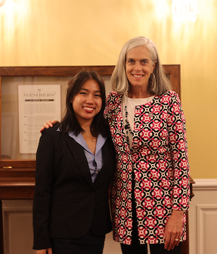

My Experiences

Democratic Reproductive Rights Rally
I stood behind the same podium as the top Democratic women in leadership including AOC, Nancy Pelosi, and Ayanna Pressley!

Lunch with Rep. Clark
Rep. Clark took me and the other interns out for lunch, it was amazing! We all got to learn so much about her career and why she is passionate about serving the public.

Attending Korea University
One of the top 3 prestigious "SKY" universities in South Korea where I studied for a semester in my junior year.